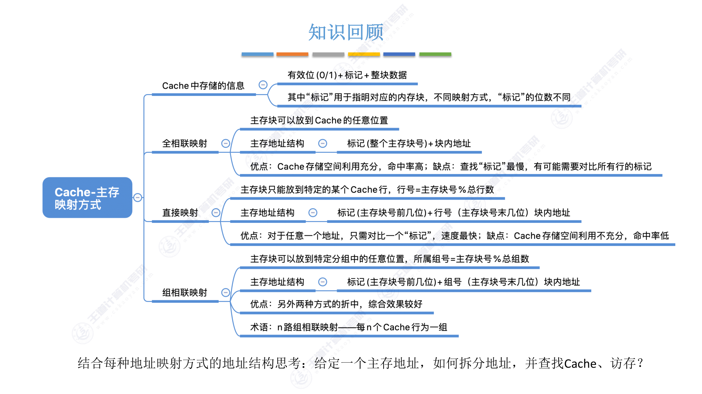
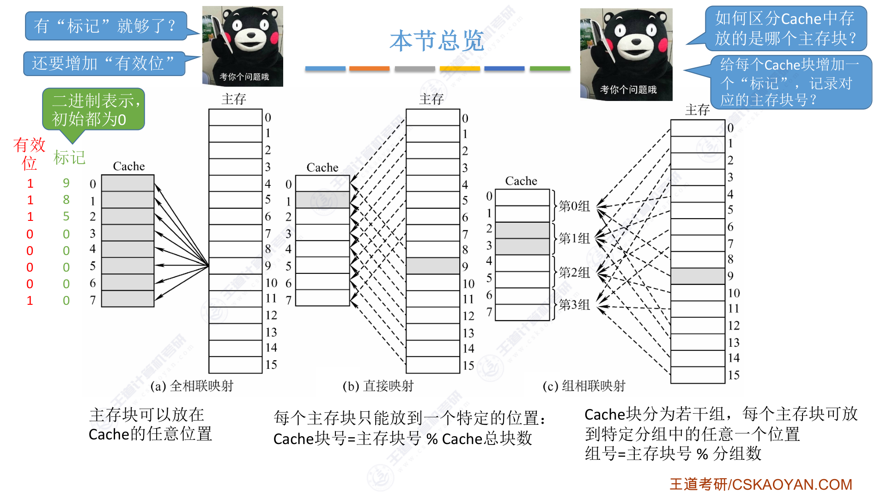
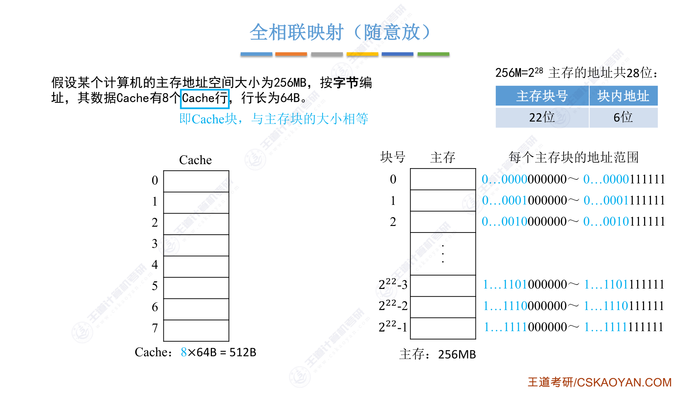
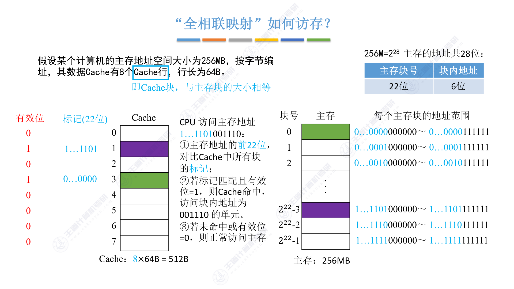
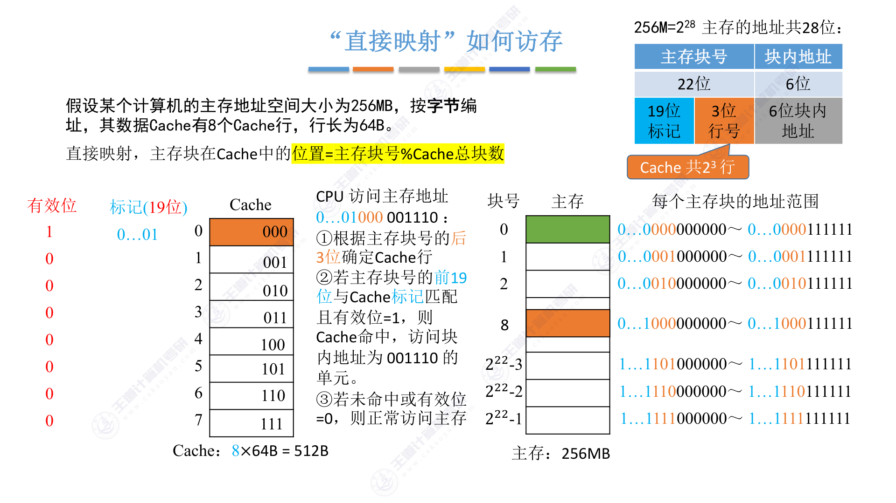
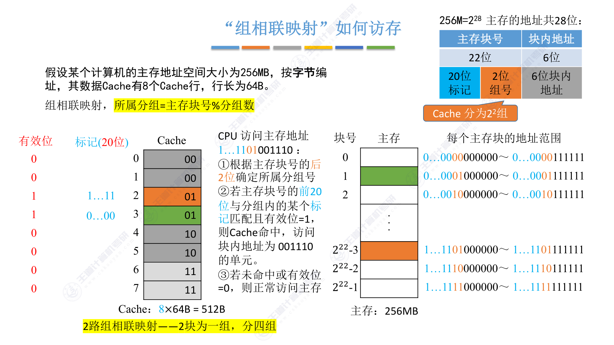

3.5.3 Cache和主存的映射方式
思维导图

一、Cache中存储的信息
每个Cache行（块）需要存储三部分信息：
| 组成部分 | 说明 |
|---|---|
| 有效位（1位） | 0/1，表示该Cache行是否有效，初始为0 |
| 标记（Tag） | 用于指明对应的内存块，不同映射方式标记位数不同 |
| 整块数据 | 从主存调入的数据块 |
为什么要有效位？
Cache刚启动时所有内容都是空的，有效位初始为0。只有当某个主存块被调入Cache后，对应行的有效位才置为1。这样CPU访问时可以先检查有效位，避免读取到无效数据。
二、本节总览：三种映射方式

三种映射方式的核心区别在于主存块可以放到Cache的哪个位置：
| 映射方式 | 主存块放置位置 | 特点 |
|---|---|---|
| 全相联映射 | Cache的任意位置 | 灵活但查找慢 |
| 直接映射 | 固定的某个位置 | 快但不灵活 |
| 组相联映射 | 特定分组中的任意位置 | 折中方案 |
三、全相联映射（随意放）
1. 基本原理
主存块可以放到Cache的任意位置
全相联映射是最灵活的方式，主存中的任意一块可以放到Cache中的任意一行。
2. 地址结构
主存地址 = 标记（整个主存块号）+ 块内地址

全相联映射示例
题目条件：
- 主存地址空间大小：256MB = \(2^{28}\) 字节
- Cache行数：8行
- 行长（块大小）：64B = \(2^6\) 字节
地址划分：
- 主存地址共 28位
- 块内地址：\(log_2(64) = 6\) 位
- 主存块号（标记）：\(28 - 6 = 22\) 位
- 主存共有 \(2^{22} = 4M\) 个块
3. Cache行结构
每个Cache行包含：
- 有效位：1位
- 标记：22位（整个主存块号）
- 数据：64B
4. 访存过程

CPU访问主存地址的步骤：
- 取出主存地址的前22位作为标记
- 将该标记与Cache中所有行的标记进行对比
- 若某行的标记匹配且有效位=1，则Cache命中，访问块内地址对应的单元
- 若未命中或有效位=0，则正常访问主存
全相联映射的缺点
查找标记时需要遍历所有Cache行进行对比，硬件实现成本高，速度慢。当Cache容量较大时，这个问题更加明显。
5. 优缺点总结
| 优点 | 缺点 |
|---|---|
| Cache存储空间利用充分 | 查找"标记"最慢 |
| 命中率高 | 需要对比所有行的标记 |
| 主存块放置灵活 | 硬件实现成本高 |
四、直接映射（只能放固定位置）
1. 基本原理
每个主存块只能放到一个特定的位置：Cache块号 = 主存块号 % Cache总块数
直接映射规定了每个主存块在Cache中的唯一位置，不允许放到其他位置。
2. 地址结构
主存地址 = 标记（主存块号前几位）+ 行号（主存块号末几位）+ 块内地址

直接映射示例
题目条件：（同全相联映射）
- 主存地址空间大小：256MB = \(2^{28}\) 字节
- Cache行数：8行 = \(2^3\) 行
- 行长：64B = \(2^6\) 字节
地址划分：
- 主存地址共 28位
- 块内地址：6位
- 行号：\(log_2(8) = 3\) 位（主存块号的末3位）
- 标记：\(22 - 3 = 19\) 位（主存块号的前19位）
3. 为什么行号可以用主存块号末几位？
因为 \(主存块号 \% 8 = 主存块号 \% 2^3\)，相当于取主存块号的最后3位二进制数。
例如：主存块号为8（二进制 \(1000\)），\(8 \% 8 = 0\)，所以放到Cache第0行。
4. 访存过程
CPU访问主存地址的步骤：
- 取主存块号的后3位确定Cache行号
- 取主存块号的前19位作为标记
- 将该标记与对应Cache行的标记对比
- 若标记匹配且有效位=1，则Cache命中
- 若未命中或有效位=0，则正常访问主存
直接映射的缺点
主存块只能放到固定位置，即使其他Cache行空闲也无法使用。例如主存块8只能放到Cache第0行，如果第0行已被占用，即使第1~7行都空闲，主存块8也无法调入。
5. 优缺点总结
| 优点 | 缺点 |
|---|---|
| 只需对比一个"标记"，速度最快 | Cache存储空间利用不充分 |
| 硬件实现简单 | 命中率低 |
| 主存块位置固定，灵活性差 |
五、组相联映射（可放到特定分组）
1. 基本原理
主存块可以放到特定分组中的任意位置：所属分组 = 主存块号 % 分组数
组相联映射是全相联映射和直接映射的折中方案。它将Cache分为若干组，每个主存块可以放到特定分组内的任意位置。
2. 术语：n路组相联
n路组相联映射：每n个Cache行为一组
例如：8行Cache分为4组，每组2行，称为2路组相联映射。
3. 地址结构
主存地址 = 标记（主存块号前几位）+ 组号（主存块号末几位）+ 块内地址

组相联映射示例
题目条件：（同前）
- 主存地址空间大小：256MB = \(2^{28}\) 字节
- Cache行数：8行，分为4组（2路组相联）
- 行长：64B = \(2^6\) 字节
地址划分：
- 主存地址共 28位
- 块内地址：6位
- 组号：\(log_2(4) = 2\) 位（主存块号的末2位）
- 标记：\(22 - 2 = 20\) 位（主存块号的前20位）
4. 访存过程
CPU访问主存地址的步骤：
- 取主存块号的后2位确定所属分组号
- 取主存块号的前20位作为标记
- 将该标记与分组内所有行的标记进行对比
- 若某行的标记匹配且有效位=1，则Cache命中
- 若未命中或有效位=0，则正常访问主存
5. 优缺点总结
| 优点 | 缺点 |
|---|---|
| 另外两种方式的折中 | 硬件复杂度介于两者之间 |
| 综合效果较好 | 需要对比组内所有行的标记 |
| 灵活性和速度兼顾 |
六、三种映射方式对比
| 比较项 | 全相联映射 | 直接映射 | 组相联映射 |
|---|---|---|---|
| 主存块放置位置 | Cache任意位置 | 固定位置 | 特定分组内任意位置 |
| 位置计算 | 无 | 行号 = 主存块号 % 总行数 | 组号 = 主存块号 % 分组数 |
| 标记位数 | 整个主存块号 | 主存块号前几位 | 主存块号前几位 |
| 需要对比的行数 | 所有行 | 仅1行 | 分组内所有行 |
| 速度 | 最慢 | 最快 | 中等 |
| Cache利用率 | 最高 | 最低 | 中等 |
| 命中率 | 最高 | 最低 | 中等 |
| 硬件成本 | 最高 | 最低 | 中等 |
七、考点总结
核心概念
- Cache行结构：有效位 + 标记 + 数据
- 三种映射方式：全相联、直接、组相联
- 地址划分：不同映射方式的地址结构不同
常见考点
考点1：地址位数计算
典型计算题
题目：某计算机主存容量为512MB，Cache容量为64KB，块大小为16B，采用4路组相联映射。求主存地址各位的划分。
解答：
- 主存容量 \( 512MB = 2^{29} \) 字节，主存地址共 29位
- 块大小 \( 16B = 2^4 \) 字节，块内地址 4位
- Cache行数：\( 64KB / 16B = 4096 = 2^{12} \) 行
- 分组数：\( 4096 / 4 = 1024 = 2^{10} \) 组
- 组号：10位
- 标记：\( 29 - 4 - 10 = 15 \) 位
考点2：全相联映射访存
- 标记位数 = 整个主存块号位数
- 需要与所有Cache行的标记对比
- 硬件成本高但命中率高
考点3：直接映射访存
- 行号 = 主存块号 % Cache总行数
- 若Cache行数为 \(2^n\)，则行号取主存块号的末n位
- 标记 = 主存块号的其余位
- 只需对比1行的标记
考点4：组相联映射访存
- 组号 = 主存块号 % 分组数
- 若分组数为 \(2^m\)，则组号取主存块号的末m位
- 标记 = 主存块号的其余位
- 需要对比组内所有行的标记
考点5：n路组相联的含义
- n路组相联：每n个Cache行为一组
- 8行Cache分4组 = 2路组相联
- 8行Cache分2组 = 4路组相联
- 8行Cache分8组 = 1路组相联（即直接映射）
- 8行Cache分1组 = 8路组相联（即全相联映射）
易错点
常见错误
- 混淆行号和组号：直接映射用"行号"，组相联映射用"组号"
- 标记位数计算错误：标记位数 = 主存块号总位数 - 行号/组号位数
- 分组数计算错误：分组数 = Cache总行数 / 每组行数（n路）
- 访存对比范围：全相联对比所有行，直接映射对比1行，组相联对比组内所有行